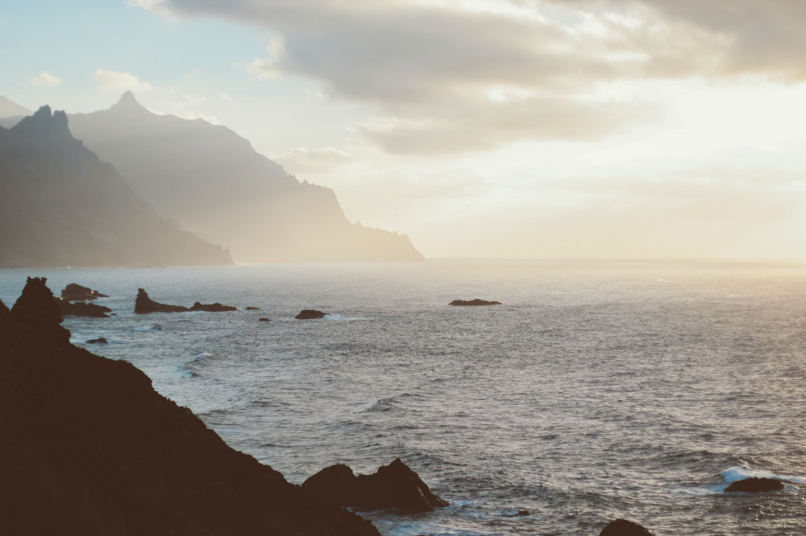

Tytularna Teneryfa to wyspa tysiąca wrażeń. Dzięki łagodnemu klimatowi i olbrzymiemu zakresowi zajęć na największej z Wysp Kanaryjskich możesz robić tysiące rzeczy o każdej porze roku.

Spędź dzień na plaży, przejdź się jednym ze szlaków, które zapuszczają się w bujne lasy, odkryj imponujące wulkany i inspirujące krajobrazy, które są prawie nieziemskie, oraz uderzające wąwozy i klify. Spędź wieczór, wpatrując się w niekończące się gwiazdy w dobrym towarzystwie lub zrealizuj marzenie o zobaczeniu delfinów i wielorybów pływających na wolności…
Tętniące życiem plaże z drobnym, złotym piaskiem i spokojnymi wodami znajdują się w głównych ośrodkach turystycznych Teneryfy na południu wyspy. Ale są też spokojniejsze plaże, dalej od miast, rozsianych wzdłuż wybrzeża. Niektóre z nich mają ciemny, wulkaniczny piasek lub są ukształtowane w cudowne naturalne baseny i stawy, które są chronione przed falami.
Każdy wybór jest idealny, aby spędzić wspaniały dzień na plaży. Najlepszą rzeczą do zrobienia jest ich odkrycie i zanurzenie się od razu!
Żeglowanie obok delfinów i wielorybów
Obserwowanie różnych gatunków waleni, które pływają na wolności w wodach południowo-zachodniej Teneryfy, jednego z niewielu miejsc na świecie, gdzie można je zobaczyć tak blisko wybrzeża, jest przeżyciem, o którym trudno zapomnieć.
Oprócz delfinów, które żyją tu przez cały rok, ten wyjątkowy obszar odwiedzają również płetwale błękitne i orki. Prawdziwe sanktuarium dla tych niesamowitych ssaków, które znajdują tu idealne warunki do żerowania i rozmnażania.
Wspinanie na najwyższy wulkan w Europie
Jeśli jest coś, czym Teneryfa może się chwalić, to są to niezwykłe naturalne przestrzenie. Ale jeden wyróżnia się bardziej niż jakikolwiek inny: Park Narodowy Teide, najczęściej odwiedzany park w całej Europie. Oprócz tego, że jest domem dla imponującej struktury wulkanicznej, jaką jest Teide, najwyższy szczyt Hiszpanii i wpisany na Listę Światowego Dziedzictwa Naturalnego, znajdziesz tutaj prawdopodobnie najbardziej uderzającą scenerię, jaką kiedykolwiek widziałeś.
To jedne z najbardziej spektakularnych manifestacji wulkanów na naszej planecie. Wyobraźnia nie zbliża się nawet do imponującej panoramy, która pojawia się przed naszymi oczami na szczycie, na wysokości 3715 metrów, z niezwykłymi widokami na kalderę, setki stożków lawy, potoków, grobli, skał... Wspomnieć o żyjącej tam florze i faunie, z wieloma endemicznymi gatunkami, z których niektóre występują wyłącznie w samym parku.
Każdy, kto jest w dobrej formie i ma około sześciu godzin w zapasie, może wejść na szczyt pieszo, podążając szlakiem, ale można też wsiąść do kolejki linowej i dotrzeć tam w zaledwie kilka minut.